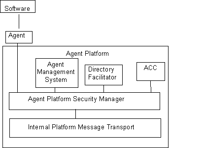

FOUNDATION FOR INTELLIGENT PHYSICAL AGENTS
FIPA 98 Specification
Part 10, Version 1.0
Agent Security Management
Obsolete
Publication date: 23rd October 1998
Copyright © 1998 by FIPA - Foundation for Intelligent Physical Agents
Geneva, Switzerland
This is one part of the first version of the FIPA 98 Specification as
released in October 1998.
The latest version of this document may be found on the FIPA web site:
http://www.fipa.org
Comments and questions regarding this document and the specifications
therein should be addressed to:
fipa98@fipa.org
It is planned to introduce a web-based mechanism for submitting
comments to the specifications.
Please refer to the web site for FIPA's latest policy and procedure for dealing
with issues regarding the specification.
|
Notice |
|
Use of the technologies described in this specification may infringe patents, copyrights or other intellectual property rights of FIPA Members and non-members. Nothing in this specification should be construed as granting permission to use any of the technologies described. Anyone planning to make use of technology covered by the intellectual property rights of others should first obtain permission from the holder(s) of the rights. FIPA strongly encourages anyone implementing any part of this specification to determine first whether part(s) sought to be implemented are covered by the intellectual property of others, and, if so, to obtain appropriate licenses or other permission from the holder(s) of such intellectual property prior to implementation. This FIPA 98 Specification is subject to change without notice. Neither FIPA nor any of its Members accept any responsibility whatsoever for damages or liability, direct or consequential, which may result from the use of this specification. |
Contents
1. Scope....................................................................................................................................................... 3
1.1 Background.............................................................................................................................................................................................. 3
1.2 Assumptions............................................................................................................................................................................................. 3
1.3 Security Issues Addressed in FIPA 98................................................................................................................................................ 3
1.4 Security Issues Not Addressed in FIPA 98......................................................................................................................................... 3
2. Normative References................................................................................................................ 3
3. Terms and definitions................................................................................................................... 3
4. Symbols (and abbreviated terms)........................................................................................ 3
5. Security Management................................................................................................................... 3
5.1 Security Related Platform Interfaces.................................................................................................................................................. 3
5.1.1 The Agent Platform Security Manager (APSM)........................................................................................................................ 3
5.1.2 The Agent Management System (AMS)..................................................................................................................................... 3
5.1.3 The Directory Facilitator (DF)........................................................................................................................................................ 3
5.2 Agent Communication Security............................................................................................................................................................ 3
5.2.1 Transport Level Protection............................................................................................................................................................. 3
5.2.2 Secure Messaging Examples.......................................................................................................................................................... 3
5.2.3 Security Profiling.............................................................................................................................................................................. 3
5.3 Auditing..................................................................................................................................................................................................... 3
5.3.1 Audit Events..................................................................................................................................................................................... 3
5.3.2 Audit Log Administration.............................................................................................................................................................. 3
5.3.3 Audit Log Security.......................................................................................................................................................................... 3
5.3.4 Audit Log Analysis......................................................................................................................................................................... 3
5.3.5 Administrator Notification.............................................................................................................................................................. 3
The Foundation for Intelligent Physical Agents (FIPA) is a non-profit association registered in Geneva, Switzerland. FIPA’s purpose is to promote the success of emerging agent-based applications, services and equipment. This goal is pursued by making available in a timely manner, internationally agreed specifications that maximise interoperability across agent-based applications, services and equipment. This is realised through the open international collaboration of member organisations, which are companies and universities active in the agent field. FIPA intends to make the results of its activities available to all interested parties and to contribute the results of its activities to appropriate formal standards bodies.
This specification has been developed through direct involvement of the FIPA membership. The 48 members of FIPA (October 1998) represent 13 countries world-wide.
Membership in FIPA is open to any corporation and individual firm, partnership, governmental body or international organisation without restriction. By joining FIPA each member declares himself individually and collectively committed to open competition in the development of agent-based applications, services and equipment. Associate Member status is usually chosen by those entities who want to be members of FIPA without using the right to influence the precise content of the specifications through voting.
The members are not restricted in any way from designing, developing, marketing and/or procuring agent-based applications, services and equipment. Members are not bound to implement or use specific agent-based standards, recommendations and FIPA specifications by virtue of their participation in FIPA.
This specification is published as FIPA 98 specifications ver 1.0. All these parts have undergone an intense review by members as well as non-members during the past year as preliminary versions have been available on the FIPA web site. FIPA members as well as many non-members have been conducting validation trials of the FIPA 97 specification during 1998 and will continue to subject the new output to further validation during the coming months. During 1999 FIPA will publish revised versions of the current specifications and is also planning to continue work on further specifications of agent based technology.
Introduction
The FIPA specifications represent the primary output of FIPA. It is important to appreciate that these specifications have been derived from examining requirements on agent technology posed by specific industrial applications chosen by FIPA so far, and described in Parts 4, 5, 6, and 7 of the FIPA 97 specifications.
FIPA specifies the interfaces of the different components in the environment with which an agent can interact, i.e. humans, other agents, non-agent software and the physical world. FIPA produces two kinds of specifications:
· normative specifications mandating the external behavior of an agent and ensuring interoperability with other FIPA-specified subsystems;
· informative specifications of applications providing guidance to industry on the use of FIPA technologies.
In October 1997, FIPA released its first set of specifications, called FIPA 97, Version 1.0. During 1998, comments on this specification were received. Based upon these comments, parts of FIPA 97 were superseded by a second version released in October 1998, introducing minor changes only.
Furthermore, in October 1998 FIPA released a new set of specifications, called FIPA 98, version 1.0, of which this document is a part.
The following tables provide an overview of the complete set of FIPA specifications.
Sorted by part:
|
|
Released October 1997 |
Released October 1998 |
||
|
Part |
FIPA 97 Version 1.0 |
FIPA 97 Version 2.0 |
FIPA 98 Version 1.0 |
|
|
1 |
N |
Agent Management |
Agent Management |
Agent Management Extensions |
|
2 |
N |
ACL |
ACL |
|
|
3 |
N |
Agent Software Integration |
|
|
|
4 |
I |
Personal Travel Assistant |
|
|
|
5 |
I |
Personal Assistant |
|
|
|
6 |
I |
Audio Visual Entertainment & Broadcasting |
|
|
|
7 |
I |
Network Management & Provision |
|
|
|
8 |
N |
|
|
Human-Agent Interaction |
|
10 |
N |
|
|
Agent Security Management |
|
11 |
N |
|
|
Agent Management Support for Mobility |
|
12 |
N |
|
|
Ontology Service |
|
13 |
I/M |
|
|
Developer’s Guide |
N == normative; I == informative; M == methodology; Italicised == superseded
Sorted by topic:
|
Topic |
FIPA 97(Version 1.0, unless otherwise indicated) |
FIPA 98 Version 1,0 |
|
Agent Management |
1. Basic System (Version 2.0) |
1. Extension to Basic System |
|
|
|
10. Agent Security Management |
|
|
|
11. Agent Management Support for Mobility |
|
Agent
Communication |
2. Agent
Communication Language |
8. Human-Agent Interaction |
|
|
|
12. Ontology Service |
|
Agent S/W
Integration |
3. Agent
Software Integration |
|
|
Reference Applications |
4. Personal Travel Assistant |
|
|
|
5. Personal Assistant |
|
|
|
6.
Audio/Visual Entertainment & |
|
|
|
7. Network Management & |
|
The parts of the FIPA 98 specifications are briefly described below.
This part covers agent management for inter-operable agents, and is thus primarily concerned with defining open standard interfaces for accessing agent management services. It also specifies an agent management ontology and agent platform message transport. This specification incorporates and further enhances the FIPA 97, Part 1, Version 2.0 specification. The internal design and implementation of intelligent agents and agent management infrastructure is not mandated by FIPA and is outside the scope of this part.
Part 8 – Human-Agent Interaction
This part deals with the human-agent interaction part of an agent system. It specifies two agent services: User Dialog Management Service (UDMS) and User Personalization Service (UPS). A UDMS wraps many types of software components for user interfaces allowing for ACL level of interaction between agents and human users. A UPS can maintain user models and supports their construction by either accepting explicit information about the user or by learning from observations of user behavior.
Part 10 – Agent Security Management
Security risks exist throughout agent management: during registration, agent-agent interaction, agent configuration, agent-agent platform interaction, user-agent interaction and agent mobility. The Security Management specification identifies the key security threats in agent management and specifies facilities for securing agent-agent communication via the FIPA agent platform. This specification represents the minimal set of technologies required and is complementary to the existing FIPA 97 and FIPA 98, Part 1 specifications. This part does not mandate every FIPA-compliant agent platform to support agent security management.
Part 11 – Agent Management Support for Mobility
This specification represents a normative framework for supporting software agent mobility using the FIPA agent platform. This framework represents the minimal set of technologies required and is complementary to the existing FIPA 97 and FIPA 98, Part 1 specifications. Wherever possible, it refers to existing standards in this area. The framework supports additional non-mobile agent management operations such as agent configuration. The specification does not mandate that every FIPA-compliant agent platform must support agent mobility, nor does it cover the specific requirements for agents on mobile devices with intermittent connectivity, which is covered by the scope of the existing FIPA Agent Management activity.
Part 12 – Ontology Service
This part deals with technologies enabling agents to manage explicit, declaratively represented ontologies. It specifies an ontology service provided to a community of agents by a dedicated Ontology Agent. It allows for discovering public ontologies in order to access and maintain them; translating expressions between different ontologies and/or different content languages; responding to queries for relationships between terms or between ontologies; and, facilitating identification of a shared ontology for communication between two agents.
The specification deals only with the communicative interface to such a service while internal implementation and capabilities are left to developers. The interaction protocols, communicative acts and, in general, the vocabulary that agents must adopt when using this service are defined. The specification does not mandate the storage format of ontologies, but only the way the ontology service is accessed. However, in order to specify the service, an explicit representation formalism, or meta-ontology, has been specified allowing communication of knowledge between agents.
Part 13 – FIPA 97 Developer's Guide
The Developer’s Guide is meant to be a companion document to the FIPA 97 specifications, and is intended to clarify areas of specific interest and potential confusion. Such areas include issues that span more than one of the normative parts of FIPA 97.
The FIPA 98 Agent Security Management specification outlines the requirements for secure intra- and inter-platform communication and the requirements for platform auditing.
The FIPA 98 Agent Security Management specification introduces the notion of an Agent Platform Security Manager (APSM). The basic security model is for agents to communicate through APSM’s on their respective hosts. The APSM communicates via FIPA ACL and is responsible for maintaining the platform security policy.
Security risks exist throughout the agent life-cycle. These risks are present during agent management, registration, execution, agent-to-agent communication, user-agent interaction, and agent mobility. Many of these security risks have been identified in this specification and will be handled by existing counter measures that are well known.
The following six security threats apply to agents and multi-agent systems:
Disclosure: A breach in the confidentiality of an agent's private data or meta-data. For example,an entity eavesdrops on the communication between agents and extracts information on the goals, plans, capabilities, etc. of these agents.
Alteration: Theunauthorized modification or corruptionof an agent, its state, or data.For example,an Agent Communication Channel modifies the content of a message.
Copy and Replay: An attempt tocopy an agent, or a message, and clone or retransmit it. For example,a malicious platform createsan illegal copy, or a clone, of an agent, ora message from an agent is illegally copied and retransmitted.
Denial of Service: Anattack that attempts to deny resources to the platform or an agent. For example,an agent floods the Directory Facilitator Agent with requests and the Directory Facilitator is unable to provide its services to other agents.
Repudiation: An agent,or agent platform, denies that it has received/sent a message or taken a specific action. For example,a commitment between two agents as the result of a contract negotiation is later ignored by one of the agents, the agent denies the negotiation has ever taken place and refuses to honor its part of the commitment.
Spoofing and Masquerading: An unauthorized agent, or agent platform, claims the identity of another, authorized or unauthorized, agent or agent platform. For example,an agent registers as a Directory Facilitator Agent and therefore receives information from other registering agents.
FIPA 98 Security Management addresses mutual agent security issues for agent-to-agent interaction based upon the following assumptions and guiding principles:
· The security features supported by this specification are guaranteed only if all incoming and outgoing communication is channeled through the APSM. It should be noted that direct agent-to-agent communication which is not mediated by the FIPA 98 Part 10 compliant AP can present significant security risks if no alternative, or underlying, security mechanisms are in place.
· Agents trust the underlying platform security management to be sufficient for its agent communication needs.
· The APSM respects the agents’ wishes and tries to facilitate the agent’s security requirements, but ultimately the APSM is responsible for enforcing the platform policy. The APSM, or an APSM-stub, at each host negotiates secure inter-platform agent-to-agent communications. When the agent does not have a secure way to communicate with the home APSM, for example, when the agent and the APSM of the platform are on different hosts, an APSM-stub is required on the agent host for the agent to communicate securely with the home APSM.
· FIPA 98 Agent Security Management will reuse and refer to existing security standards and solutions whenever possible.
· This specification does not define how a PKI is established, nor how initial public key pairs and certificates are established for agents and agent platforms. However, the security capabilities defined in this specification rely on their existence.
· Certificate administration functions (revoke, issue, etc) are handled by services outside the agent platform.
· For the security capabilities described by this specification to work properly, the AMS, ACC, and DF components that form a platform must communicate securely through some means outside the scope of the specification.
· FIPA 98 distinguishes between intra-platform and inter-platform communication. The APSM should accept direct requests only from agents on its own platform; other requests should be via other APSMs acting as intermediaries.
· The DF is a useful way of discovering capabilities of a registered agent. By extending the information registered to include security-related information, the DF can provide additional support for the security functions described in this specification. However, the DF should not be used to store sensitive information. For example, the DF can store certificates, but should not store private keys.
· The platform profile can become a standard way for an agent to discover the security transport mechanism supported at the agent platform, if its contents are extended accordingly and a means of inquiry is provided.
· This specification does not preclude an agent from encrypting its payload (:content tag) prior to sending the message to the APSM. It is assumed that the sending and receiving agents have negotiated the encryption mechanism in order to support end-to-end confidentiality.
· This specification does not mandate the use of security features. Instead, it mandates how agents and agent platforms may interoperate in a secure fashion, if security is desired.
· This specification allows for security management to be implemented at the message transport layer, through the use of security services available from a shared transport protocol at the agent platform.
· At the agent level, this specification relies on an asynchronous messaging model of communications, as opposed to a session-oriented model. All information regarding the protection mechanisms employed to encapsulate a given message is provided with the message. At the transport level, the protection mechanisms may be either message- or session-oriented. An agent is free to request any transport-level mechanism available at the agent platform where it is situated, but the APSM decides if this request conforms to the platform security policy.
· Public key infrastructures (PKI), based on X.509 public key certificates and certificate revocation lists, are not addressed in FIPA 98.
· Payment protocols (e.g., SET) or micro payment mechanisms are not addressed in this specification.
· This specification does not cover denial of service attacks that arise from access to native resources.
· Mobile agent security is not currently addressed by this specification. The specification has been written so as not to preclude mobility. Mobile agent security will be addressed in future security specifications.
· Access control of local resources is beyond the scope of this specification. For example, agent read/write access to databases.
· Security measures for routine system administration.
· Security measures for non-agent software that is corrupted and poses a security threat to the agent system.
· Security measures for non-agent related security issues, for example user identification to operating systems.
· There still may be agent-specific security risks that have yet to be identified. Particularly, the agent-specific paradigm of non-deterministic intelligent autonomous collaboration probably gives rise to new security risks comparable to those known in real world social societies.
[1] FIPA 97 Parts 1-3
[3] PKIX Standard IETF, URL <http://www.ietf.org/internet-drafts/draft-ietf-pkix-ipki3cmp-08.txt>
[4] Cryptographic Message Syntax Standard, Public Key Cryptography Standards (PKCS) #7, RSA Laboratories, November 1993, URL http://www.rsa.com/rsalabs/pubs/PKCS/html/pkcs-7.html
[5] CORBA Facilities: Mobile Agent System Interoperability Facilities Standard
[6] ISO/IEC 9594, Information Technology - Open Systems Interconnection -The Directory. Also published as ITU-T X.500 series - http://www.itu.ch
[7] ISO/IEC 9594-8, Information Technology - Open Systems Interconnection -The Directory: Authentication Framework. Also published as ITU-T X.509 - http://www.itu.ch
[8] ISO/IEC 8824-1, Information Technology - Open Systems Interconnection -Abstract Syntax NotationOne(ANS.1): Specification of Basic Notation. Also published as the ITU-T X.680 series - http://www.itu.ch
[9] B. Schneier, Applied Cryptography, 2nd Edition, (New York: Wiley, 1995).
[10] A.J. Menezes, P.C. van Oorschot, and S.A. Vanstone, Handbook of Applied Cryptography (Boca Raton, FL: CRC Press, 1996)
For the purposes of this specification, the following terms and definitions apply:
Action
A basic construct which represents some activity which an agent may perform. A special class of actions is the communicative acts.
Agent
An Agent is the fundamental actor in a domain. It combines one or more service capabilities into a unified and integrated execution model which can include access to external software, human users and communication facilities.
Agent cloning
The process by which an agent creates a copy of itself on an agent platform.
Agent code
The set of instructions used by an agent.
Agent Communication Language (ACL)
A language with precisely defined syntax, semantics and pragmatics that is the basis of communication between independently designed and developed software agents. ACL is the primary subject of the FIPA 97 specification, part 2.
Agent Communication Channel (ACC)
The Agent Communication Channel is an agent which uses information provided by the Agent Management System to route messages between agents within the platform and to agents resident on other platforms.
Agent data
Any data associated with an agent.
Agent invocation
The process by which an agent can create another instance of an agent on an agent platform.
Agent Management System (AMS)
The Agent Management System is an agent which manages the creation, deletion, suspension, resumption, authentication and migration of agents on the agent platform and provides a “white pages” directory service for all agents resident on an agent platform. It stores the mapping between globally unique agent names (or GUID) and local transport addresses used by the platform.
Agent Platform
An Agent Platform provides an infrastructure in which agents can be deployed. An agent must be registered on a platform in order to interact with other agents on that platform or indeed other platforms. An AP consists of three capability sets ACC, AMS and default Directory Facilitator.
Agent Platform Security Manager (APSM)
An Agent Platform Security Manager is responsible for maintaining the agent platform security policy. The APSM is responsible for providing transport-level security and creating agent audit logs. The APSM negotiates the requested intra- and inter-domain security services of other APSM's in concert with the implemented distributed computing architectures, such as CORBA, COM, DCE, on behalf of an agent in its domain.
ARB Agent
An agent which provides the Agent Resource Broker (ARB) service. There must be at least one such an agent in each Agent Platform in order to allow the sharing of non-agent services.
Communicative Act
A special class of actions that correspond to the basic building blocks of dialogue between agents. A communicative act has a well-defined, declarative meaning independent of the content of any given act. CAs are modelled on speech act theory. Pragmatically, CAs are performed by an agent sending a message to another agent, using the message format described in FIPA97, part 2.
Content
That part of a communicative act which represents the domain dependent component of the communication. Note that "the content of a message" does not refer to "everything within the message, including the delimiters", as it does in some languages, but rather specifically to the domain specific component. In the ACL semantic model, a content expression may be composed from propositions, actions or IRE's.
Content Language
The content of a FIPA message refers to whatever the communicative act applies to. If, in general terms, the communicative act is considered as a sentence, the content is the grammatical object of the sentence. This content can be encoded in any language, the content language, denoted by the :language parameter of the communicative act.
Conversation
An ongoing sequence of communicative acts exchanged between two (or more) agents relating to some ongoing topic of discourse. A conversation may (perhaps implicitly) accumulate context that is used to determine the meaning of later messages in the conversation.
CORBA
Common Object Request Broker Architecture, an established standard allowing object-oriented distributed systems to communicate through the remote invocation of object methods.
Directory Facilitator
The Directory Facilitator [1] is an agent that provides a “yellow pages” directory service for the agents. It stores descriptions of the agents and the services they offer.
Explicit & Implicit
An ontology is explicit when it is specified in declarative form as a set of axioms and definitions (e.g. as a set of Ontolingua statements) that an agent can refer to (e.g. by means of an OKBC interface). An ontology is implicit, when the assumptions on the meaning of its vocabulary are only implicitly embedded in some piece of software.
Feasibility Precondition (FP)
The conditions (i.e. one or more propositions) which need be true before an agent can (plan to) execute an action.
Knowledge model
It is a specification of the set of primitives used by a certain class of representation languages. As such, a knowledge model can be considered as a meta-ontology. For instance, several ontology servers use an object oriented model of knowledge based on primitive notions like classes, frames, properties, constraints, axioms and functions. FIPA adopts for the specification of these notions the OKBC version 2.0.4 Knowledge Model, which is called FIPA-meta-ontology or FIPA knowledge model.
Illocutionary effect
See speech act theory.
Knowledge Querying and Manipulation Language (KQML)
A de facto (but widely used) specification of a language for inter-agent communication. In practice, several implementations and variations exist.
Local Agent Platform
The Local Agent Platform is the AP to which an agent is attached and which represents an ultimate destination for messages directed to that agent.
Message
An individual unit of communication between two or more agents. A message corresponds to a communicative act, in the sense that a message encodes the communicative act for reliable transmission between agents. Note that communicative acts can be recursively composed, so while the outermost act is directly encoded by the message, taken as a whole a given message may represent multiple individual communicative acts.
Message content
See content.
Message transport service
The message transport service is an abstract service provided by the agent management platform to which the agent is (currently) attached. The message transport service provides for the reliable and timely delivery of messages to their destination agents, and also provides a mapping from agent logical names to physical transport addresses.
Meta-ontology
For allowing a FIPA agent to communicate through ACL messages aboutontologies, it is necessary to describe the concepts used to speak about anontology. This description is called the meta-ontology. It is an ontologyitself as it provides the ontology to refer to another ontology. Therefore,the meta-ontology should be powerful enough to deal with all potentiallyavailable ontologies and make explicit, at least informally, these concepts.
Mobile agent
An agent that is not reliant upon the agent platform where it began executing and can subsequently transport itself between agent platforms.
Mobility
The property or characteristic of an agent that allows it to travel between agent platforms.
Ontology
An ontology is an explicit specification of the structure of a certain domain (e.g. e-commerce, sport, …). For the practical goals of FIPA (that is enabling development and deployment of inter-operable agent-based applications), this includes a vocabulary (i.e. a list of logical constants and predicate symbols) for referring to the subject area, and a set of logical statements expressing the constraints existing in the domain and restricting the interpretation of the vocabulary. Ontologies therefore provide a vocabulary for representing and communicating knowledge about some topic and a set of relationships and properties that hold for the entities denoted by that vocabulary.
Ontology Agent
An agent that provides the Ontology Service specified in this specification. The main objective of the Ontology Agent is to offer to FIPA agents a unified view of the services offered by the different ontology servers. Its second objective is to allow an ontology server to be known by FIPA agents. Moreover some ontology agents can provide the agents with services such as translation facilities. Like any other FIPA agent, the ontology agent has to be registered to the DF and to provide the DF with the published ontologies and available services.
Ontology Name
The ontologies referred to by the agents can be provided by different ontology servers. Consequently, these ontology names are constructed from: the OA name, and the ontology logical name (given by the ontology designer e.g. “car “).
Ontology Server
Provider of an Ontology Service, not necessarily in the FIPA domain, or FIPA-compliant. Examples of ontology servers already existing outside FIPA are: Ontolingua, XML/RDF ontology servers, ODL databases ontologies servers. Access to the services provided by these ontologies servers are based on various APIs such as the OKBC interface, the ODL interface or HTTP.
Ontology sharing problem
The problem of ensuring that two agents that wish to converse do, in fact, share a common ontology for the domain of discourse. Minimally, agents should be able to discover whether or not they share a mutual understanding of the domain constants.
Perlocutionary Effect
See speech act theory.
Personalization
An agent’s ability to take individual preferences and characteristics of users into account and adapt its behavior to these factors.
Proposition
A statement which can be either true or false. A closed proposition is one which contains no variables, other than those defined within the scope of a quantifier.
Protocol
A common pattern of conversations used to perform some generally useful task. The protocol is often used to facilitate a simplification of the computational machinery needed to support a given dialogue task between two agents. Throughout this document, we reserve protocol to refer to dialogue patterns between agents, and networking protocol to refer to underlying transport mechanisms such as TCP/IP.
Rational Effect (RE)
The rational effect of an action is a representation of the effect that an agent can expect to occur as a result of the action being performed. In particular, the rational effect of a communicative act is the Perlocutionary effect an agent can expect the CA to have on a recipient agent. Note that the recipient is not bound to ensure that the expected effect comes about; indeed it may be impossible for it to do so. Thus an agent may use its knowledge of the rational effect in order to plan an action, but it is not entitled to believe that the rational effect necessarily holds having performed the act.
Software Service
An instantiation of a connection to a software system.
Software System
A software entity which is not conformant to the FIPA Agent Management specification.
Speech Act
The notion of a speech act is derived from the linguistic analysis of human communication. It is based on the idea that with language the speaker not only makes statements, but also performs actions, e.g. a request or an assertion. In this context, a verb denoting a speech act, is called a performative, since saying it makes it so. See FIPA97, part 2 for more details.
Speech Act Theory
A theory of communications which is used as the basis for ACL. Speech act theory is derived from the linguistic analysis of human communication. It is based on the idea that with language the speaker not only makes statements, but also performs actions. A speech act can be put in a stylised form that begins "I hereby request …" or "I hereby declare …". In this form the verb is called the performative, since saying it makes it so. Verbs that cannot be put into this form are not speech acts, for example "I hereby solve this equation" does not actually solve the equation.
Stationary agent
An agent that executes only upon the agent platform where it begins executing and is reliant upon it.
TCP/IP
A networking protocol used to establish connections and transmit data between hosts
User Agent
An agent which interacts with a human user.
User Dialog Management Service
An agent service in order for FIPA agents to interact with human users; by converting ACL into media/formats which human users can understand and vice versa, managing the communication channel between agents and users, and identifying users interacting with agents.
User ID
An identifier for a real user.
User Model
A user model contains assumptions about user preferences, capabilities, skills, knowledge, etc, which may be acquired by inductive processing based on observations about the user. User models normally contain knowledge bases which are directly manipulated and administered.
User Personalization Service
An agent service that offers abilities to support personalization, e.g. by maintaining user profiles or forming complex user models by learning from observations of user behavior.
Wrapper Agent
An agent which provides the FIPA-WRAPPER service to an agent domain on the Internet.
ACC: Agent Communication Channel
ACL: Agent Communication Language
AMS: Agent Management System
AP: Agent Platform
API: Application Programming Interface
APSM: Agent Platform Security Manager
ARB: Agent Resource Broker
CA: Communicative Act
CORBA: Common Object Request Broker Architecture
DB: Database
DCOM: Distributed COM
DF: Directory Facilitator
FIPA: Foundation for Intelligent Physical Agents
FP: Feasibility Precondition
GUID: Global Unique Identifier
HAP: Home Agent Platform
HTTP: Hypertext Transmission Protocol
IDL: Interface Definition Language
IIOP: Internet Inter-ORB Protocol
IRE: Identifying Referring Expression
OMG: Object Management Group
ORB: Object Request Broker
RE: Rational Effect
RMI: Remote Method Invocation, an inter-process communication method embodied in Java
SL: Semantic Language
SMTP: Simple Mail Transfer Protocol
SQL: Structured Query Language
S/W: Software System
TCP / IP: Transmission Control Protocol / Internet Protocol
This section describes the logical components and interfaces necessary to support security management on a FIPA compliant agent platform. This section introduces the Agent Platform Security Manager (APSM) and its responsibilities with respect to maintaining the agent platform and infrastructure security policies. Figure 1 shows a graphical representation of the APSM reference concept.
|  |
Figure 1 – Agent Platform Security Management Reference Concept
The APSM is responsible for maintaining platform and infrastructure security policies. The APSM is responsible for run-time activities, such as, communications, providing transport-level security, and creating audit trails. FIPA 98 security cannot be guaranteed unless, at a minimum, all communication between agents are carried out through the APSM.
The APSM is responsible for negotiating the requested inter- and intra-domain security services with other APSM’s in concert with the implemented distributed computing architecture, such as CORBA, COM, DCE, on behalf of the agents in its domain. The APSM is responsible for enforcing the security policy of its domain, and can at its discretion, upgrade the level of security requested by an agent. The APSM cannot downgrade the level of services requested by an agent, but must inform the agent that the service level requested cannot be provided.
The AMS is responsible for managing the administrative activities of an agent platform, including creation/deletion of agents, registration of agents at the platform, and control over access to and use of the ACC. There is only one AMS for each agent platform. The AMS for the platform on which an agent is created is called the home agent platform, and is responsible for vouching for an agent’s identity. If the agent platform is in any way considered to be trusted, that trust must begin with the AMS. Therefore, it is reasonable to consider that an AMS may possess a public key pair and associated certificate that among other things provides the basis for inter-platform security from the message transport service. The AMS can keep the agent key pairs in secure storage (e.g. hashed) for mapping to user identity. The basic capabilities of the platform are described within the platform profile.
Users should maintain their own private keys, but during disconnected operation, the AMS may require access to this private key in order for the user’s agent to sign their agent’s secure transactions. In this case, it would be up to the user to trust the AMS, and the AMS’s responsibility to protect the private key against unauthorized disclosure.
Several parameters defined in fipa-man-df-agent-descriptions may be used to determine the security context of a registered agent. They include the :interaction-protocols, :agent-type, :agent-services, and :ownership parameters. For example, an agent may wish to use the security services of a Certificate Authority. The :agent-services parameter indicates whether Certificate Authority services are supported by any agent registered by that DF. When a search operation is used to discover an agent by a particular entity, the :agent-services parameter can be used either to constrain the search to an agent which supports Certificate Authority services, or to select from the results of a search which was not constrained by this parameter. This facility, of course, requires that agents provide the search parameters of interest when they register with the DF. The DF should not be used to store sensitive information. For example, the DF can store certificates, but should not store private keys as all information in the DF is made public.
This specification extends the set of defined parameters for DF registry entries to provide more support for security operations. The new parameter security-context is defined which may contain the following parts:
· :agent-certificate
· :owner-certificate
· :security-encapsulation-method
The :agent-certificate and :owner-certificate parts respectively convey one or more public key certificates of an agent and of the agent’s owner. The :security-encapsulation-method conveys the various methods of encapsulation supported directly by the agent. Multiple certificates apply in situations where an agent or an agent’s owner has established public key pairs for different policies, functions, or domains. With the addition of the first two parts, the DF essentially becomes a default repository for agent certificates. Since public key certificates are signed objects, there is no requirement on the DF to protect this information beyond that of any other parameter. These optional parameters, if present, are necessary for security encapsulation to occur.
Note that there is always one DF for each agent platform, referred to as the default DF. A DF may register with other DFs to represent an arbitrary network of relationships. While the DF can be considered a form of certificate repository, it is not a replacement for repositories that may be established as part of a general, public key certificate infrastructure. The latter, for example, would contain certification revocation lists needed to verify that a particular certificate has not been revoked before its expiration date. Both the ACC and AMS can register with a DF. At a minimum, the AMS must register with the default DF of the platform.
Transport level protection relies on the :envelope parameter to indicate the security services the transport mechanism will apply to a message with regard to transport-level security. The entire ACL message, including the :envelope parameter, is treated as the payload and processed (e.g., encrypted, signed, etc.) accordingly. While the agent requests the security services, the responsibility for encapsulating the message lies with the internal message transport mechanism.
The format of the :envelope parameter information is a list of keyword/value/ or keyword/level pairs. The keyword “security” identifies transport level encapsulation. The keyword is followed by one or more of the following values: “confidentiality”, “integrity”, “authentication”, and “non-repudiation”. Each of these values can be associated with a level of security (low, medium, high), or the agent can allow the APSM to select a level of security consistent with the domain’s security policy. The mapping of these values to specific transport level security services depends on the particular protocols supported by the agent platform. Table 5.1 below identifies typical interpretations for common transport protocol mechanisms. This list may be expanded to include other security requirements, such as payment mechanism. Table 5.2 describes the meanings of low, medium, and high levels of security.
The specification allows agents to request specific security mechanisms (e.g., DES, DES3, etc.) or the agent may optionally choose to use proprietary mechanisms (e.g. encrypt the :content), but the agent may not override the security policy of the APSM.
Security Service Mappings for the :envelope Parameter
An agent can request that the APSM provide one, or more, of the following security services. An agent will typically request confidentiality, integrity, and authentication for inter-platform communication involving separate security domains, but the agent is free to select any combination of the services listed in Table 5.1. Most authentication mechanisms include confidentiality and integrity security mechanisms. The APSM can, in accordance with the platform security policy, provide security services even if the agent has not explicitly requested them.
Table 5.1 Security Services
|
Security Keyword |
Description |
|
Confidentiality |
The message is encrypted for the receiver. An eavesdropper won’t be able to view or derive the original plain text. |
|
Integrity |
A one-way hash of the message (i.e., message digest) is calculated and sent along with the message to the receiver. The recipient is then able to verify whether the message has been tampered with. |
|
Authentication |
The message is signed on behalf of the sender, the recipient is able to verify the sender’s identity. |
|
Non-repudiation
|
The agent requests a level of authentication, integrity, and confidentiality to ensure non-repudiation and receives verifying information. |
An agent can request a low, medium, or high level of confidentiality and can defer to the platform’s security policy to decide what mechanism to use to a ensure low, medium, or high level of confidentiality. These confidentiality levels are provided so that the agent is not burdened with the responsibility of knowing about and deciding on specific security mechanisms, but is only responsible for determining the sensitivity of the data which it produces. The meaning of these levels is assumed to change over time, and it is up to the APSM to map the security levels to its security policy.
Table 5.2 Confidentiality Levels
|
Confidentiality Level Request |
Description |
|
Low
|
Lowest applicable level of encryption (to yield best performance, e.g. 40-bit, or 56-bit). |
|
Medium
|
An intermediate level of confidentiality provided by the platform. |
|
High
|
Highest possible level of encryption provided by the platform (i.e. 128-bit). |
Alternatively, an agent can request that the APSM provide a specific security mechanism to ensure confidentiality. If the APSM cannot satisfy the agent request, the APSM must notify the agent that it cannot provide the requested service. Table 5.3 lists confidentiality mechanisms that may be requested by the agent from the APSM. The agent is free to request any other confidentiality mechanism that may be supported by the APSM.
Table 5.3 Confidentiality Mechanisms
|
Confidentiality Mechanism |
Description
|
|
DES-40 |
Data Encryption Standard |
|
DES-56 |
Data Encryption Standard |
|
IDEA |
International Data Encryption Algorithm |
|
RC2 |
RSA Data Security |
|
RC4 |
RSA |
|
RC5 |
RSA |
|
RC6 |
RSA |
|
Blowfish |
Blowfish |
|
CAST |
CAST |
|
SAFER |
SAFER |
|
AES |
Advanced Encryption Standard |
|
Other or Proprietary |
|
An agent can request that the APSM provide a specific security mechanism to ensure the integrity of a message. Table 5.4 lists integrity mechanisms that may be requested by the agent from the APSM. The agent is free to request any other integrity mechanism that may be supported by the APSM.
Table 5.4 Integrity Mechanisms
|
Integrity Mechanism |
Description
|
|
Message Authentication Code (MAC) |
|
|
SHA-1 |
Secure Hash Algorithm |
|
MD2 |
RSA Security |
|
MD4 |
RSA Security |
|
MD5 |
RSA Security |
|
RIPEM |
|
|
RIPEM-160 |
|
|
HMAC |
Keyed Hashing |
|
Other or Proprietary |
|
An agent can request that the APSM provide a specific security mechanism to ensure the authentication of a message. Table 5.5 lists authentication mechanisms that may be requested by the agent from the APSM. The agent is free to request any other authentication mechanism that may be supported by the APSM.
Table 5.5 Authentication Mechanisms
|
Authentication Mechanism |
Description |
|
Digital Signature Algorithm (DSA) |
FIPS 186, Part 1 ANSI X9.30 |
|
Diffie-Hellman Key Exchange |
|
|
RSA Algorithm |
RSA Security |
|
Kerberos |
MIT |
|
ECDSA |
Elliptic Curve Digital Signature Algorithm |
|
Other or Proprietary |
|
An agent may request a low, medium, or high level security mechanism. The following example shows how the security parameters would fit into the letter construct :
(letter
:envelope (
:destination(
(:name acc@iiop://somewhere.org:50/acc)
(:address iiop://somewhere.org:50/acc))
:return-address (
(:name acc@iiop://agentland.com:50/acc)
(:address iiop://agentland.com:50/acc))
:confidentiality low
:integrity high
)
:message
(refuse
:sender acc@iiop://agentland.com:50/acc
:receiver acc@iiop://somewhere.org:50/acc
:ontology fipa-agent-management
:language SL1
:context fipa-request
:content
.............)
)
Alternatively, an agent may specify a specific implementation of a security mechanism. The following example shows how an agent's request for a specific implementation of a security mechanism would fit into the letter construct:
(letter
:envelope (
:destination(
(:name acc@iiop://somewhere.org:50/acc)
(:address iiop://somewhere.org:50/acc))
:return-address (
(:name acc@iiop://agentland.com:50/acc)
(:address iiop://agentland.com:50/acc))
:authentication ECDSA
)
:message
(refuse
:sender acc@iiop://agentland.com:50/acc
:receiver acc@iiop://somewhere.org:50/acc
:ontology fipa-agent-management
:language SL1
:context fipa-request
:content
.............)
)
The agent platform must be able to convey the security policy it enforces to other agents. Security profiling needs to be further studied and defined. Security profiling will leverage existing and ongoing work in other standards consortia with which FIPA will maintain liaison.
In order to maintain accountability, especially in the case of repudiation, platform-level auditing is required. This involves the use of an automated mechanism to record platform activities in a protected audit log.
The implementation details of auditing are the design choices of the individual agent system developers, but the following minimum requirements should be met:
· Audit data should be obtained automatically and stored in a protected log(s) which cannot be tampered with.
· A record of all platform activities that could be viewed as potential security threats should be recorded in the audit log.
· Audit data should be gathered from all the agents which support agent management: the APSM, AMS, ACC and DF.
· A record of the start-up and shut-down of the audit log.
· A record of any changes in what events or parameters are being audited.
At least following fields should be part of the audit record format:
§ Date and time of the action
§ Type of the action
§ Subject identity (sender of the message)
§ Object identity (receiver of the message)
§ Success of Failure of event
§ Reason for failure of event
The system should be capable of logging the following APSM events:
· Security Services Requested
· Security Exceptions
The system should be capable of logging the following ACC events:
· Traffic through ACC
· Forwarding of messages – including refuse-failure reasons
The system should be capable of logging the following AMS events:
· Register/Deregister
· Modify
· Authenticate
· Cloning/Create/terminate
· Suspend/resume
The system should be capable of logging the following DF events:
· Register/Deregister
· Security parameters
· Modify (i.e. services)
· Search
The system administrator should be able to select which events need to be audited in order to comply with the platform’s security policy. In the case where the ACC, AMS, and DF are distributed across several platforms, care must be taken to ensure that the sequence of security events can be reconstructed.
The audit logs should only be accessed by authorized administrators. Systems administrators should exercise due diligence in maintaining and protecting audit logs, as legal issues related to the accountability of agents in multi-agent and mobile agent platforms are likely to become more important.
The audit log itself must be protected from unauthorized access, alteration, and deletion.
The system must be capable of monitoring the capacity of audit log and notifying the system administrator when a threshold is reached.
Audit Log analysis is outside the scope of this specification. Audit log analysis can be accomplished using vendor tools.
The system should be capable of notifying a system administrator of security related audit events. For example, an email can be sent to the system administrator if the audit log has reached a threshold value of the audit log capacity.